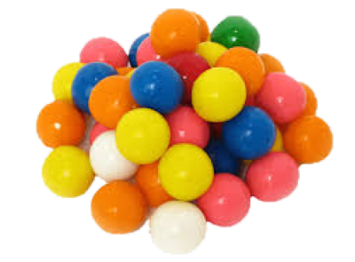

Bubblegum 10/12/2020
I was at the dollar store the other day and wanted to buy some sweets. I didn’t know what I wanted to buy, so
I thought to myself: why not buy bubble gum? I haven’t had bubble gum in a while even though I love it. It’s
lightweight, cheap, convenient, and it keeps me going throughout the day. Today, I have decided to talk about bubble
gum for week’s blog entry.
The main ingredients in bubblegum are resin, wax, and elastomer. Bubble gum is meant to be chewed without beings
swallowed. Bubble gum comes in a variety of flavours, such as cinnamon, peppermint, watermelon, and even bacon. My favourite
bubblegum flavour is mint. It is the most basic and generic bubble gum flavour you could ever imagine, and I love it. If you
haven’t tried bubble gum before, it feels chewy, rubbery, and pretty smooth. I’m sure you’ll find a bubble gum flavour you
enjoy.

A few weeks ago, I did some research on bubble gum and found some of the most interesting things. The candy was first
invented by a man in Pennsylvania, Walter E. Diemer, while working in a chewing gum factory in 1928. Shocking, right?
That was only 92 years ago, which is pretty recent compared to other candies.
Research has shown that bubblegum helps you stay focused while working on long tasks. Whether it's cleaning,
studying, or doing homework. For me, chewing bubble gum helps me relieve stress and concentrate better. The study
showed that those who chewed gum had quicker reaction times and executed visual memory tasks better than those who
didn't. The next time you work on something, chew on a piece of gum and see if it helps you out.
The next time you visit a convenience store, pick up a pack of bubble gum. They're cheap and they fit right into your pocket.
By Kian, approved candy expert.
Sources:
Wikipedia contributors. "Bubble gum." Wikipedia, The Free Encyclopedia. Wikipedia,
The Free Encyclopedia, 22 Aug. 2020.
Web. 13 Oct. 2020.
Anon. "bubble gum" Google Images. Accessed Oct 12 2020
British Psychological Society (BPS). "Chewing gum helps you concentrate for longer, study suggests."
ScienceDaily. ScienceDaily, 8 March 2013. Accessed Oct 23, 2020.